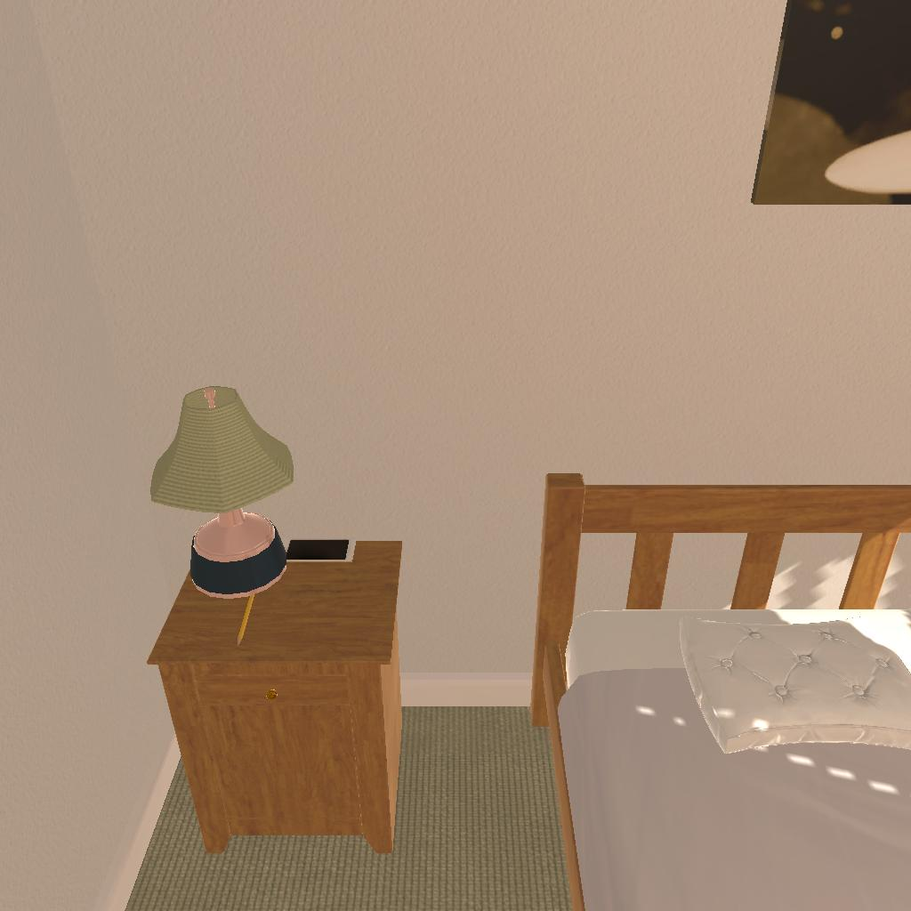

---------------------------------------------------------task: 0---------------------------------------------------------
--------------------------------------------------------------------------------------------------------------------------------------------------------------------
--------------------------------------------------------------------------------------------------------------------------------------------------------------------
Step:--------------------------------------------------------------------------1-------------------------------------------------------------------------------
----------------------------------------
VLM Prompt:
**Task**
Please perform as an embodied AI agent. Our final objective is to look at alarmclock under the desklamp. Below is the plan for completing the task, the current observation, alongside historical data and admissible actions for the next step. Please determine the best action for the next step!
**Plan**
Below is a detailed step-by-step plan to complete the task.
1. Find an alarm clock.
2. Pick up the alarm clock.
3. Find a desk lamp.
4. Turn on the desk lamp.
5. Position the alarm clock under the illuminated desk lamp.
6. Look at the alarm clock under the desk lamp.
**Current Observation**
Displayed is an image capturing the current position of the agent.
**History Information**
Displayed are the previous observations with their corresponding actions.
State 1:
1. Step Index in the Plan: 1
2. Objects: Desk Lamp, Sidetable, Bed
3. Action: go to sidetable 1
**Admissible Actions**
(1): go to bed 1
(2): go to drawer 1
(3): go to dresser 1
(4): go to drawer 2
(5): go to drawer 3
(6): go to drawer 4
(7): go to drawer 5
(8): go to drawer 6
(9): go to drawer 7
(10): go to drawer 8
(11): go to drawer 9
(12): go to drawer 10
(13): go to drawer 11
(14): go to safe 1
(15): go to laundryhamper 1
(16): go to garbagecan 1
(17): take pillow 1 from sidetable 1
(18): take cellphone 1 from sidetable 1
(19): take pencil 1 from sidetable 1
(20): use desklamp 1
**Analysis Guideline**
1. Analyze the history and current observation, and then determine our current step in the plan and our current place.
2. List all visible objects related to the task in the current observation, without summarizing any as "various items."
3. Analyze the objects in the current observation based on the history and the requirements for the current step, and then determine if we can complete the step with the current observation.
4. Analyze and decide on the most appropriate action to take.
5. Summarize the analysis using the following format: "Analysis: [The summarization of the analysis], The Most Appropriate Action: (i which is the integer.): [Selected action]"
**Notes**
1. We must complete each step of the plan in order and cannot skip steps when the previous ones are not finished.
2. For "Go to" actions listed as "go to xxx [n]", interpret this as there are n distinct actions available: "go to xxx 1", "go to xxx 2", ..., "go to xxx n". Select one specific action from these options instead of using "go to xxx [n]".
3. If receptacles such as drawers, cabinets, and so forth are closed in the current observation, we may try to open them.
4. Pay attention to synonyms and ensure clarity in the terms used.
5. We must determine and provide the single action which must be in the **Admissible Actions**.
6. If there is no history available, we are at the first step and the current place is "Unknown".
**Answer**
Please select the most suitable action by following the **Analysis Guideline**, keeping the above **Notes** in mind.
----------------------------------------
----------------------------------------
VLM Response:
Analysis: Based on the current observation and history information, we have already completed step 1 of the plan by going to the sidetable, where we found the desk lamp. In the current observation, we can see the desk lamp on the sidetable next to the bed. This means we are currently at step 3 in the plan, which is to find a desk lamp. Since the desk lamp is already found, we can proceed to step 4, which is to turn on the desk lamp. Therefore, the most appropriate action to take next would be to use the desk lamp to illuminate the area.
The Most Appropriate Action: (20): use desklamp 1
----------------------------------------
----------------------------------------
>>> Refine VLM Response and Get Pure Action: use desklamp 1
----------------------------------------
-----------------------------------------------------------------
Running time: 6.929645299911499 seconds
Total Money: 0
-----------------------------------------------------------------
-----------------------------------------------------------------
Summarization Prompt:
**Context**
Analysis: Since there is no history information, we are at the first step in the plan, which is to find a statue. The current place is unknown. In the current observation, we see a floorlamp next to an armchair with a small table that has a small object on it, which could potentially be the statue we are looking for. Since the plan requires us to find a statue first and it appears there might be one on the table next to the armchair, we should investigate this object to determine if it is the statue we need.
The Most Appropriate Action: (1): go to armchair 1
**Summary**
1. Step Index in the Plan: 1
2. Objects: Floorlamp, Armchair, Small Table, Small Object (potential statue)
3. Action: go to armchair 1
**Context**
Analysis: Based on the current observation and history information, we have already completed step 1 of the plan by going to the sidetable, where we found the desk lamp. In the current observation, we can see the desk lamp on the sidetable next to the bed. This means we are currently at step 3 in the plan, which is to find a desk lamp. Since the desk lamp is already found, we can proceed to step 4, which is to turn on the desk lamp. Therefore, the most appropriate action to take next would be to use the desk lamp to illuminate the area.
The Most Appropriate Action: (20): use desklamp 1
Please summarize the context by following above examples when providing the summary, and ensure that only the summary is included, without any extra explanation.
**Summary**
-----------------------------------------------------------------
-----------------------------------------------------------------
Summarization Response:
1. Step Index in the Plan: 4
2. Objects: Sidetable, Bed, Desk Lamp
3. Action: use desklamp 1
-----------------------------------------------------------------
-----------------------------------------------------------------
Text Observation:You turn on the desklamp 1.
-----------------------------------------------------------------
UNSUCCEED